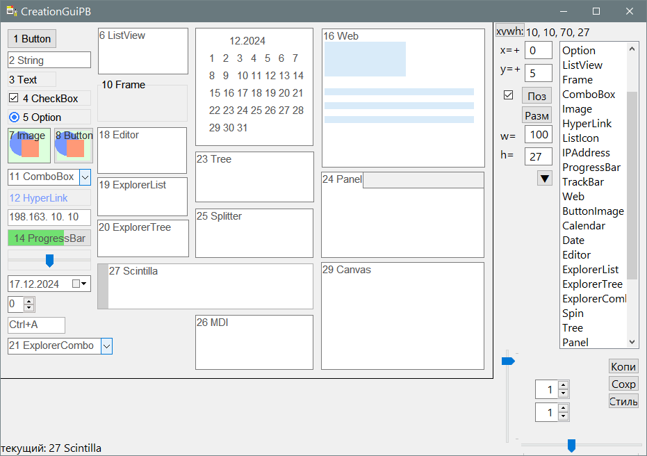

CreationGuiPB
Назначение
Создание GUI для PureBasic.

Работа с программой (основное)
- Кликнуть на элемент в списке справа (повторить несколько раз). Переместить элементы мышкой или стрелками.
- Открыть меню (треугольник вниз) и выбрать одну из задач над текущим элементом (переименовать, добавить константы).
- Сохранить результаты в код.
- Открыть полученный код и запустить.
Работа с программой (подробнее)
- Позиционирование помогает выравнивать элементы относительно предыдущего. Сдвиг задаётся полями x=+, y=+. Также можно перетаскивать элементы мышкой и двигать их клавишами стрелками: вниз, вверх, вправо, влево на один пиксел.
- Поле "Размер" позволяет задать точный размер. также размер можно задавать ползунками вертикальный и горизонтальный, а также клавишами стрелками: вниз, вверх, вправо, влево на один пиксел, удерживая Ctrl
- Если окно уже существует и требуется доработать код - добавить новые элементы, то можно двигать окно поверх исходного окна соединив левый верхний угол обоих окон. При этом включить флажок "Прозрачность", чтобы видеть элементы исходного окна. Если снять флажок, то включиться полная прозрачность только клиентской области предназначенной для элементов. В режиме полупрозрачности можно регулятором задать требуемый уровень прозрачности.
- Если окно магнитится неправильно, то попробуйте изменять отступ delta в ini-файле. Если это не помогло, то отключить магнетизм magnet=0 и использовать стрелки: вниз, вверх, вправо, влево, удерживая Ctrl и Shift, при этом окно сдвигается на один пиксел в заданном направлении.
- При сохранении созданного интерфейса окна в файл создаётся рабочий код, который может быть запущен для теста. Если внутренняя структура кода не устраивает, то можно создать шаблон и при сохранении выбирать его. При этом в шаблоне заменяются переменные %c (константы или глобальные), %g (гаджеты), %e (события) на соответствующие блоки кода. При отмене выбора шаблона код сохранится с использованием внутреннего шаблона.
- При использовании pb_any=1 в качестве идентификаторов будет использоваться #PB_Any, а результат возвращается в переменные. При этом создаётся список глобальных переменных, а не перечисление констант
- ini-файл позволяет задать собственные имена констант/переменных, позволяет определить список констант для каждого элемента, в том числе WinAPI и в дальнейшем выбирать через пункт меню "Флаги F3". Также можно задать начальные размеры для каждого элемента, а потом переопределить их через пункт меню "Запомнить размеры" на сеанс работы.
- Если необходимо создать редкие элементы, которых нет в списке, то можно кликнуть любой элемент, позиционировать его и потом скопировать координаты и размер, кликнув на строку в поле xywh:
- Если список гаджетов содержит много редко используемых элементов и мешает среди них найти нужное, то использовать "hide=20,21,13,23,24,25,26" в ini-файле, чтобы скрыть эти гаджеты по номерам, учитывая что гаджеты 0,11,15,16 скрыты принудительно.
Параметры в файле CreationGuiPB.ini
[Set]
width=800 - Ширина окна
height=600 - Высота окна
pb_any=0 - Использовать #PB_Any в гаджетах. Вместо констант генерируются глобальные переменные
template=0 - Открыть шаблон при сохранении, с переменными %c, %g, %e
autopos=1 - автоматически позиционировать элемент
magnet=1 - Магнитить окно к окнам (кроме проводника)
delta=5 - Поправка при магнетизме из-за неправильного возврата координат окна
xp=0 - отступ x
yp=5 - отступ y
we=100 - ширина элемента, чтобы задать
he=27 - высота элемента, чтобы задать
stylewb=0 - флаг стиля 0 - белый, 1 - чёрный
hide=20,21,13,23,24,25,26 - Номера гаджетов, которые игнорируются, не добавляются в список. Принудительно игнорируются 0,11,15,16 (Unknown, Container, ScrollBar, ScrollArea)
[colorW] - таблица цветов элеменетов окна для белой темы
bg=F0 - общий цвет фона окна и для элементов чекбокс, радиокнопка, надпись
br=0 - цвет границы окна
txt=0 - цвет текста
Префикс field повторяет те же цвета, только для полей ввода, редакторов, списков. Обычно это белый цвет фона.
[colorB] - тоже что [colorW], только для чёрной темы
Здесь повторяются те же параметры, что и в секции [colorW], только цвета другие, для чёрной темы
[flags]
0=#PB_Button_Right,#PB_Button_Left,#PB_Button_Default,#PB_Button_MultiLine,#PB_Button_Toggle - флаги для элемента номер 0
далее список для всех остальных элементов
[const]
btn - имя константы/переменной для кнопки
далее список для всех элементов
[width]
70 - ширина кнопки
далее список для всех элементов
[height]
27 - высота кнопки
далее список для всех элементов
Linux-версия
В Linux-версии утилиты удалён функционал "Захват окна". Также создание Scintilla заменено на TextGadget, чтобы не вносить в исполняемый файл движок Scintilla размером 2 Мб. Возможно тоже самое произойдёт с WebGadget, так как он может вызывать ошибку.
Перетаскивание элементов окна происходит по другому, при выборе элемента нужно кликнуть мимо элемента и элемент примагнитится к курсору и будет перемещаться вместе с ним. Для некоторых элементов не происходит выбор, поэтому их нужно перемещать сразу после первого добавления. В следующих версиях для такого случая будет использоваться метод выбора элемента из списка, либо элементы заменятся искусственной графикой имитирующей реальный элемент.